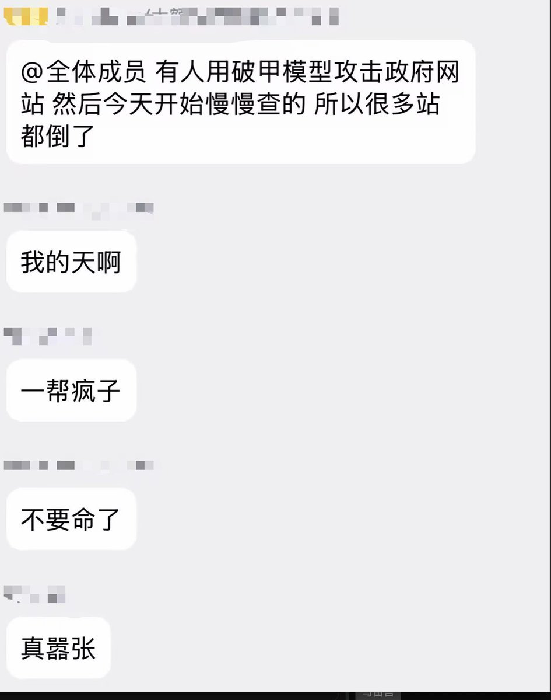
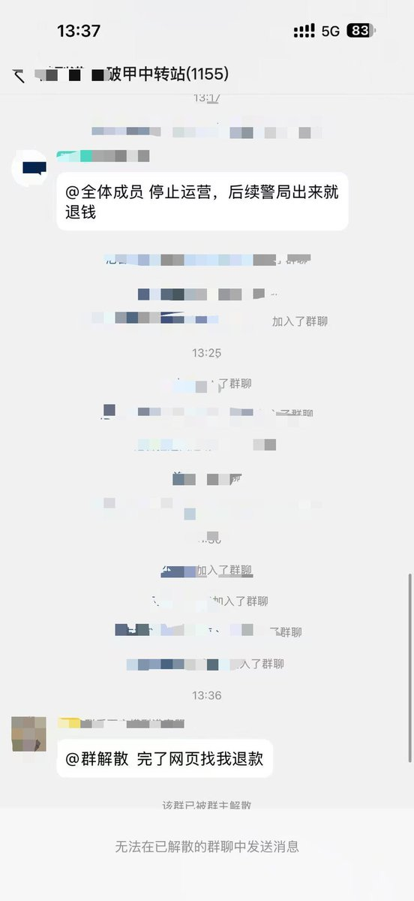

青空 しょな
@seikuushona
直接炫耀成果......
这种人到底怎么在中国平安的活下去往前的人生的啊。
好蠢（攻击性致歉）。


Max For AI
@MaxForAI
神了，有神人用破甲模型中转站拿 AI 攻击中国政府网站，最后把整个中转站都送走了。
今天看到好几个破甲模型站的群直接炸了。
这里解释一下什么叫「破甲模型站」。
简单来说，就是有人通过越狱提示词、修改 System Prompt 等方式，绕过或削弱开源、闭源模型原本的安全限制，再通过 API https://t.co/QthQj78itZ